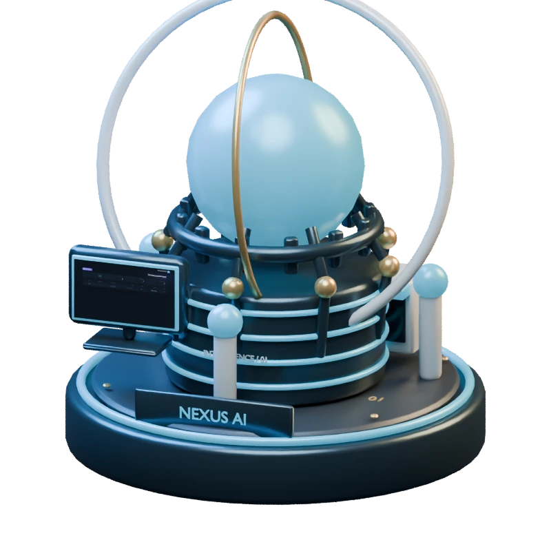
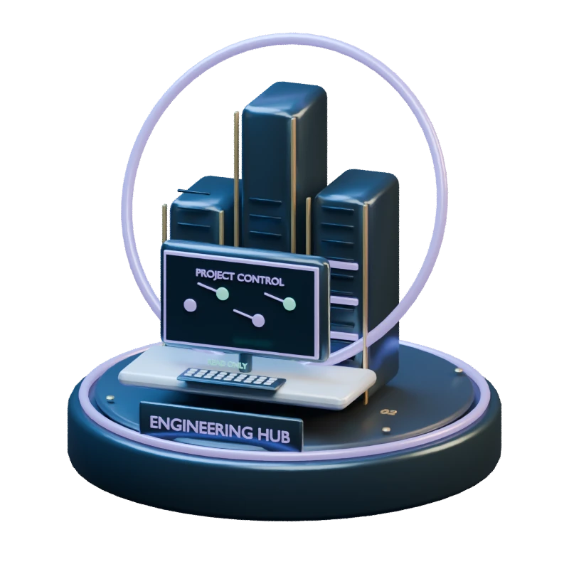
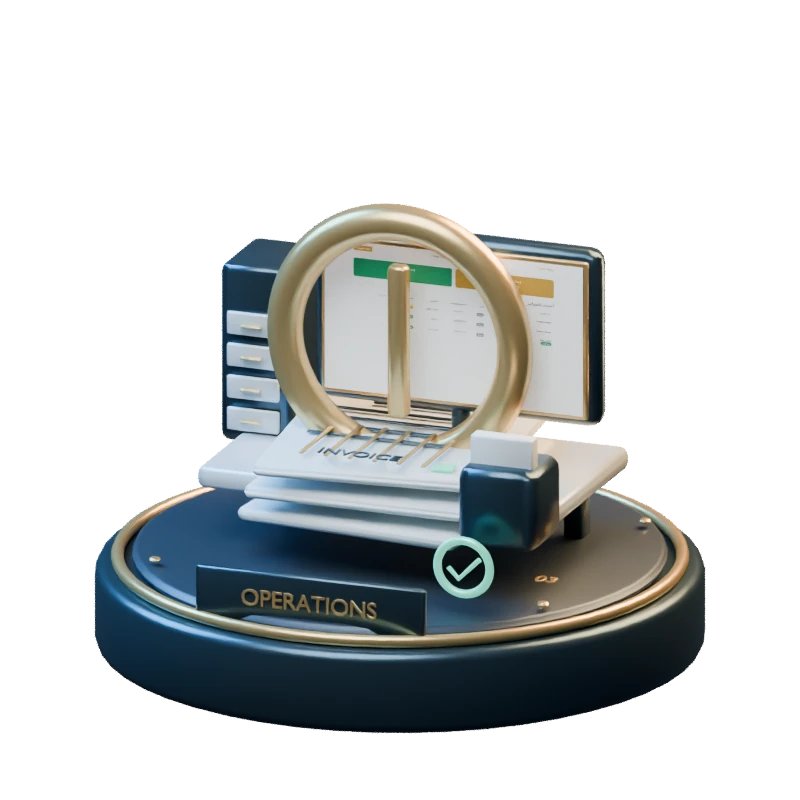
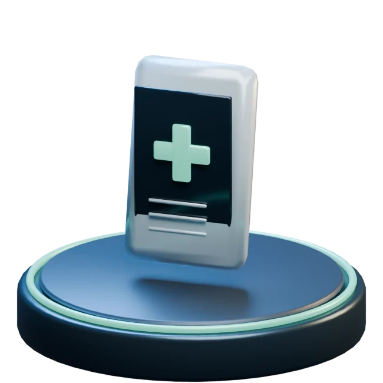
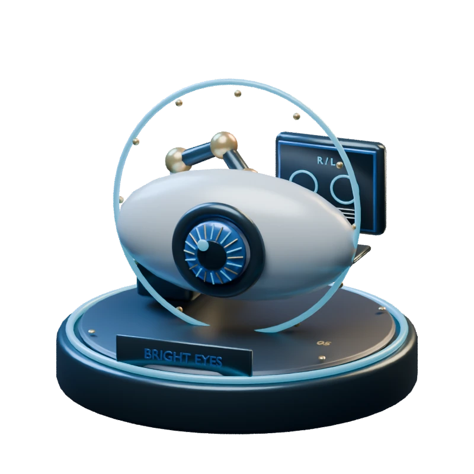

01 / 2026

AI & COMMERCEIn active development2026
Nexus AI
An intelligence layer for commerce.
One central service. Independent stores. Assistants that understand the context of each business.
PythonFastAPISQLAlchemyGoogle GenAI
MOBILE · SYSTEMS · INTELLIGENCE
I’m Karam. I build mobile apps, intelligent systems and the connections between them.
 Opening the workshop
Opening the workshop01 / SELECTED WORK
A selection of systems I’ve built — from clinic workflows to AI commerce and engineering tools.

AI & COMMERCEAn intelligence layer for commerce.
One central service. Independent stores. Assistants that understand the context of each business.

ENGINEERING SYSTEMSA workspace built around evidence.
A control plane for project-scoped AI engineering, verified changes and deliberate releases.

BUSINESS SOFTWARELess friction. Clearer operations.
Customer records, invoices, receipts and reporting in one practical day-to-day workflow.

MOBILE & HEALTHCARECare, connected across clinics.
An Arabic-first mobile experience connecting patients and doctors through everyday care journeys.

MOBILE & HEALTHCAREA clearer journey through eye care.
From appointment to eye report: a focused workflow for an ophthalmology clinic.
Public project presentation. Full implementations remain private.
02 / THE ENGINEER
I’m a software engineer based in the United Arab Emirates. I turn requirements and user journeys into working applications, APIs and integrations — with care for how a product feels and how it behaves.
AI coding agents are part of my workflow. Clear architecture, hands-on testing and human judgment remain at the center.
THREE CONNECTED DISCIPLINES
Flutter · Dart · GetX
Python · FastAPI · Flask · SQL · Firebase
Google GenAI · React · Next.js · TypeScript
03 / HOW I BUILD
04 / WHAT’S NEXT
Open to software engineering opportunities in the UAE and remotely.
Start a conversation